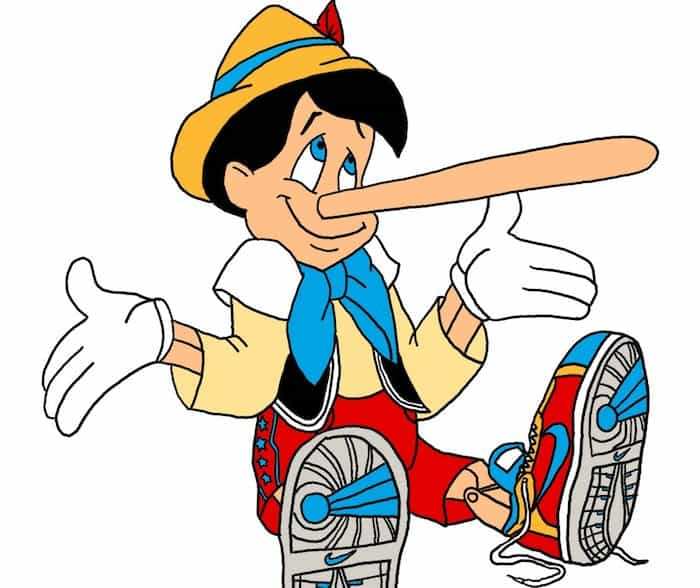

Literature was once serious art, but things just aren’t what they used to be. Part of that is because of the tastes of today’s readers, but the moribund literary establishment is at greater fault. It’s been on a downward trajectory for decades. The Big Six mainstream media mega-conglomerates own the dwindling number of major publishing houses. The New York literary establishment has promoted some turkeys in the past (two of which are described below), but most of yesterday’s acclaimed literature wouldn’t stand a chance of getting on a bookstore shelf now.
Aspiring writers typically grit their teeth when they see horrid literature selling like hotcakes. (I’m guilty as charged too. However, I have fun with it and write parodies.) Any newcomers hoping to break into the scene basically have a snowball’s chance in hell. However, with the right gimmick and incredible luck, even a talent-challenged hack can win the literary lottery.
Twilight
Eastern Europe is famous for innovations in literary horror: vampires, werewolves, Baba Yaga, and so forth. Perhaps that’s because everyone got snowed in during long winters and passed the time telling ghost stories. Be that as it may, a Mormon lady from Connecticut outdid them all. Stephanie Meyer’s twist involves sparkly vampires. Epic!
Anyway, Bella is a seventeen year old high school student. Edward is 104, but doesn’t look like it, so the May-December relationship doesn’t seem so weird. Some people think immortality would be super awesome, but he considers his undead life pretty damn dreary. Either it’s sort of a Byronic shtick, or it’s because he’s too close to Seattle and Portland.
Anyway, what’s he still doing in high school? Four years of that was barely tolerable for me. No wonder he’s such a big mope! Doesn’t taking algebra repeatedly get boring? After enough of that, he might as well get an education degree, start teaching the damn class, and get a salary for it. Maybe that would give his dreary life some purpose.
By all means, buy a copy if you suffer from insomnia.
tl;dr:
Oh Edward!
Oh Bella!
Catcher In the Rye
At least Mark David Chapman didn’t think it was overrated.
It’s quite a bestseller, with tens of millions of copies sold and still going strong. It has great appeal for those considering themselves misunderstood. That includes the guy who whacked John Lennon, the nut-job who shot Ronald Reagan, and several other screwball shooters. I’ve read it, though didn’t get the urge to pop a cap in a celebrity.
This one is the gripping adventure of a teenager going through a midlife crisis. The wangsty punk tells the story from a psych ward, droning on sophomorically like some burnt-out pothead. The poor rich kid’s tale begins with flunking out of prep school for the third time. Then the potty-mouthed protagonist goes to the Big Apple where he blows most of his remaining cash, dreams up half-baked ideas about what to do with his life, and frequently makes an ass of himself. He resents all the popular students, resents his family (except his little sister), and resents pretty much everyone else.
Exciting, isn’t it?
tl;dr:
Everyone’s a big phony! Waaaah!
A People’s History Of The United States

This terrifying dystopian fiction is an alternate history in which Americans are imperialist running dogs, and Socialists (including Communists) are the good guys. This is unsurprising, given Howard Zinn’s radicalinski past. It’s sold over two million copies, many of which were strangely passed off as an actual history textbook to high school and college students.
The rampant bias starts right in the beginning. It opens centuries before the USA’s independence, describing the governorship of Christopher Columbus. Apparently Zinn took the biased account of Francisco de Bobadilla at face value—whose purpose was to take his job as governor and nullify his 10% of colonial revenue. It could be worse; I’ve had a professor actually tell me that Columbus sent salted Mayan children in barrels back to Spain for dog food.
The early USA had very little going on other than slavery, mistreating the Indians, and oppressing the poor, according to Zinn’s Communist “dialectical materialism” approach to historiography. He calls America’s peculiar institution “the most cruel form of slavery in history”. Although it’s wrong in any form, Zinn apparently was oblivious of Middle Eastern slavery, which continued long after abolition in the USA and the rest of the Western world. The reason why the Middle East doesn’t have a race problem is because African men were routinely castrated. Most slaves in Latin America got worked to death. What was this about unprecedented cruelty again?
It does talk about history a lot, but doesn’t provide a coherent narrative. For example, the coverage of the Civil War is pretty sketchy. If you want to read about Bull Run, Gettysburg, Shiloh Hill, etc., then you’ll have to consult a real history book. As for how it started:
Lincoln initiated hostilities by trying to repossess the federal base at Fort Sumter, South Carolina.
This is one of many whoppers peppering his tall tale. As any kid who stayed awake during history class should know (unless Zinn’s book was assigned reading), the Confederates initiated hostilities by attacking Union troops in Fort Sumter. A real history book would explain this, as well as describe the nervous tension leading up to that, but Zinn didn’t do very basic research.
These errors and omissions are quite frequent. For another example, he suggests that the Rosenbergs and other atomic spies were railroaded on flimsy evidence. Actually, their guilt is candidly acknowledged even by Soviet insiders. All told, Zinn’s fiction raises some valid criticisms, but is far too biased to take seriously.
tl;dr:
America sucks. Power to The People!
Portnoy’s Complaint
This one is billed as a consummate Great American Novel. It begins with the narrator on his psychiatrist’s couch, talking about his childhood full of Freudian TMI moments. Then in his adolescence, Portnoy becomes the Maestro of Manustupration: for example, taking a break from supper to whack off in the bathroom while his mother demands to inspect his bowel movement, screwing a cored-out apple, and even a piece of liver. Maybe this is supposed to be funny, but I needed a gallon of brain bleach after all that.
As an adult, he becomes a well-paid bureaucrat in some social justice agency. He goes through girlfriends like toilet paper. His personal life makes Anthony the Weiner seem like an amateur. Portnoy would even pump and dump a pencil sharpener. Much of his wangsting is about his love/hate relationship with the Jewish community, and his hate/envy relationship with the Gentiles. It’s a grim insight into the psychology of this tragic and destructive dynamic.
The funniest part of the book is when the wanker goes to Israel and finally finds a Jewish girl at last. This could relieve the conflict in his tortured soul. However, he badly bungles a seduction attempt. Then she gives him a very well-deserved ass-kicking after he tries to rape her. The only other funny moment of this hundred page bellyaching was the shrink’s one line at the end:
So [said the doctor]. Now vee may perhaps to begin Yes?
As for the scariest part, that’s the book’s critical acclaim. Mark Twain’s The Adventures of Tom Sawyer was a classic because readers could identify with the character and his youthful misadventures. It speaks volumes about the reviewers who read Portnoy’s Complaint and thought, “Hey, I totally can relate to this guy!” The literary establishment is, well, a big circle-jerk.
tl;dr:
Nofap? No way!
Read More: How New York Killed Male Literature